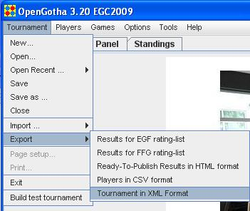

OpenGotha supports tournament data generated by other programs.
Save the file into a .txt file
In OpenGotha, create a new tournament.
Then import the .txt file with the "Tournament .. Import .. Import Players and Games from Wallist file" menu item


Save the file into a .h9 file
In OpenGotha, create a new tournament.
Then import the .h9 file with the "Tournament .. Import .. Import Players and Games from Wallist file" menu item


Save the file into a .xml file
In new OpenGotha, open the .xml file with the "Tournament .. Open .. " menu item
Some compatibility issues may occur when running several releases of OpenGotha.
To solve them, choose the "Options .. Preferences" menu item and click "Clear OpenGotha Preferences"